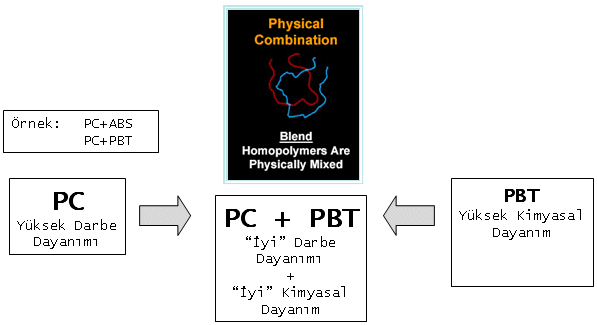
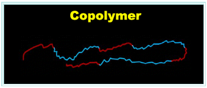
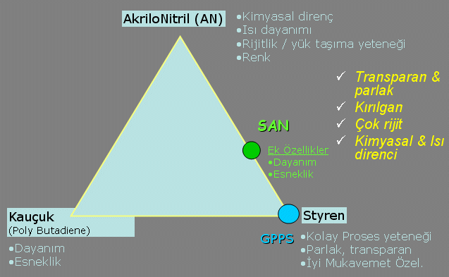
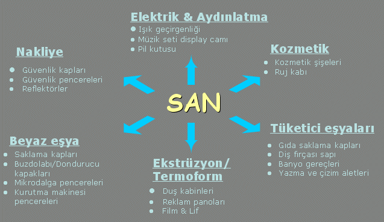
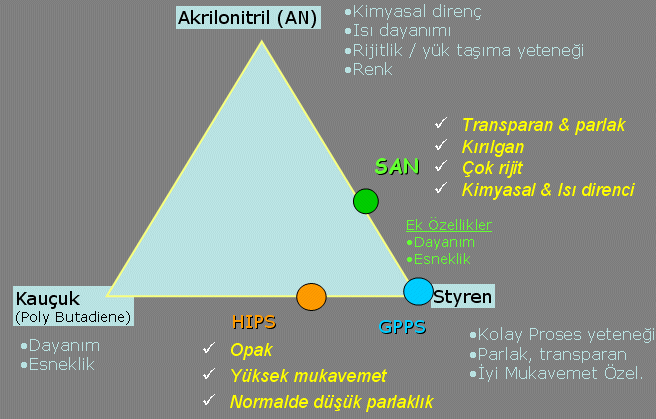
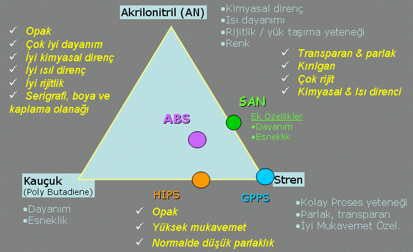

|
Katký, dolgu, takviye
nedir? Ne amaçla kullanýlýr?
- Katký
- Organik maddelerdir.
- Dayaným ile ilgili olmayan özellikleri deðiþtirirler; Aþýnma Mukavemeti, Alev Geciktiricilik, Renk, Bozunma Mukavemeti, Ýþlenebilirlik
- Dolgu
- Ýnorganik maddelerdir
- Amaç, plastiði ucuzlatmaktýr.
- Takviye
- Ýnorganik maddelerdir.
- Bazý fiziksel özellikleri düzeltmek amacýyla kullanýlýrlar.
- Madde, polimer matrisine kimyasal olarak baðlanýr.
Hangi Katký, Neden?
- Alev Geciktiriciler
- Antioksidanlar
- Antistatik Katkýlar
- Baðlayýcýlar (Coupling Agents)
- Biyokoruyucular
- Bloklaþma Engelleyiciler
- Isý Stabilizanlarý
- Kalýp Ayýrýcýlar
|
- Kaydýrýcýlar
- Köpürtücü/Köpük önleyici Katkýlar
- Kristalinite Artýrýcýlar (Nucleating Agents)
- Metal Deaktivatörleri
- Renklendiriciler
- Sürtünme Engelleyiciler
- UV ve Iþýk Stabilizörleri
|
Neden Dolgu?
- Dolgulu Plastikte
- Özgül Aðýrlýk artar
- Elastik Modül artar (Sertlik)
- Kalýpta Çekme azalýr
- Yüzey Sertliði artar
- Erime Derecesi artar
- Fiyat azalýr
- Dolgu Malzemeleri
- Kalsiyum Karbonat(Kalsit)
- Maðnezyum Silikat(Talk)
- Cam Küre / Cam Elyaf
- Kaolin, Mika, Wolastonit, Barit
- Karbon Siyahý / Karbon Elyafý
|
Önemli Parametreleri
- Parçacýk Büyüklüðü
- Parçacýk Büyüklüðü Daðýlýmý
- Dispersiyon/Islanma
- Makine Aþýndýrma Etkisi
- Ýþçi Saðlýðý-Tozuma
- Statik Elektriklendirme
- Aglomerasyon
- Isý Ýletkenliði
- Saflýk-Korozyon
- Fiyat
|
Neden Takviye?
- Takviyeli Plastikte
- Kopma Dayanýmý artar
- Basýnç Dayanýmý artar
- Elastik Modülü artar
- Sünme Modülü artar
- Maksimum Kullaným Sýcaklýðý artar
- Darbe Dayanýmý artar
- Parça anizotropik olabilir
- Arayüzey ile paralel, özelliklerde zamanla deðiþme olabilir.
- Takviye Malzemeleri
- Tüm Dolgularýn yüzey Kaplý tipleri + Baðdaþtýrýcý
|
- Önemli Parametreler
- Parçacýk Büyüklüðü
- Parçacýk Büyüklüðü Daðýlýmý
- Dispersiyon/Islanma
- Yüzey Kaplama Malzemesi
- Baðdaþtýrýcý Uyumluluðu
- Ýþçi Saðlýðý-Tozunma
- Statik Elektriklenme
- Aglomeraston
- Isý Ýletkenliði
- Fiyat
|
Polimerlerin Modifikasyonu
Farklý özellikler elde etmek ya da bazý özellikleri geliþtirmek için polimerler çeþitli yöntemlerle "modifiye" edilirler.
- Karýþýmlar (Blends)
- Homopolymer - Copolymer
- Katkýlar (Additives - Modifiers)
Karýþýmlar (Blends)
Farklý özelliklerdeki polimerler fiziksel olarak karýþtýrýlýrlar.

CoPolymers
Ýki polimer kimyasal reaksiyon ile birleþtirilerek yepyeni bir kimyasal yapý - polimer elde edilir.
|  |
Örnekler:
SANTOPRENE
HIPS
SAN
ABS
|
Styren-Akrilonitril (SAN)


Yüksek Darbe Dayanýmlý Polistren
High Impact Polystren (HIPS)

AkrilonitriButadienStren (ABS)

|